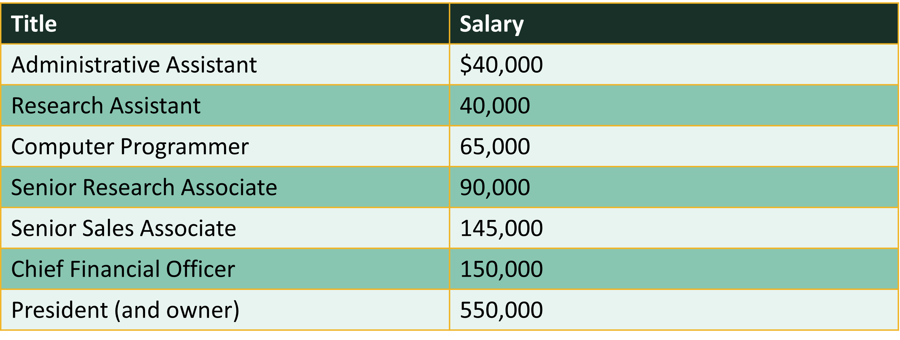
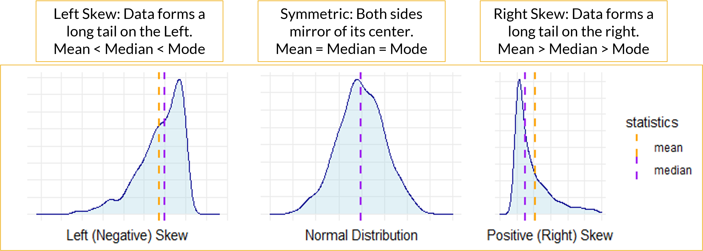
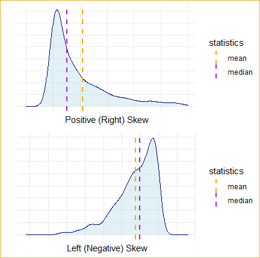
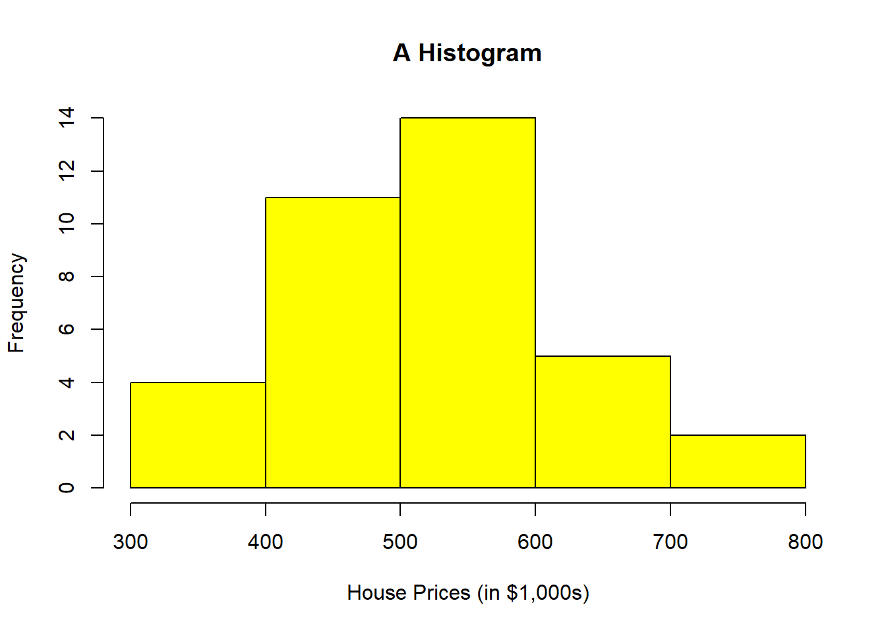
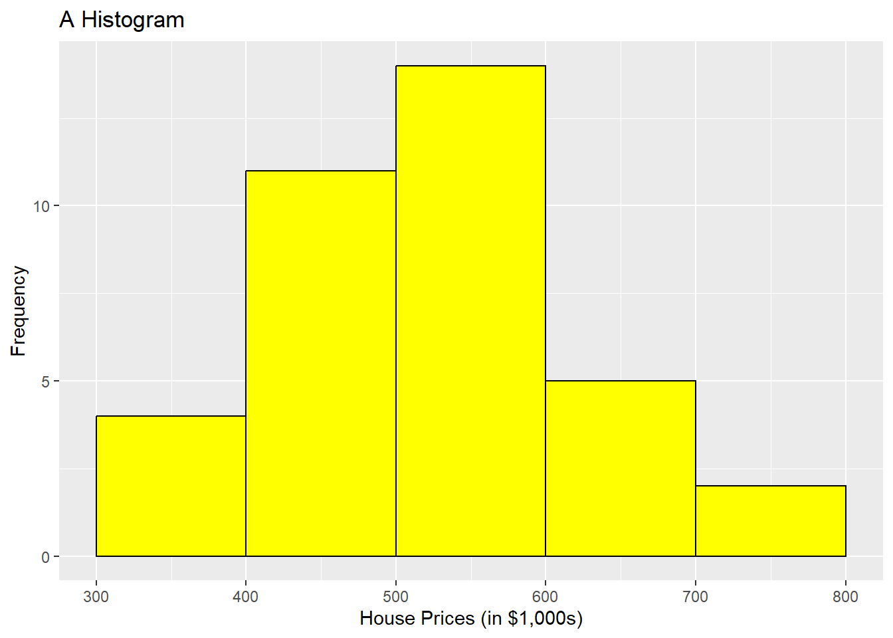
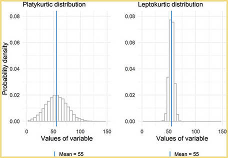
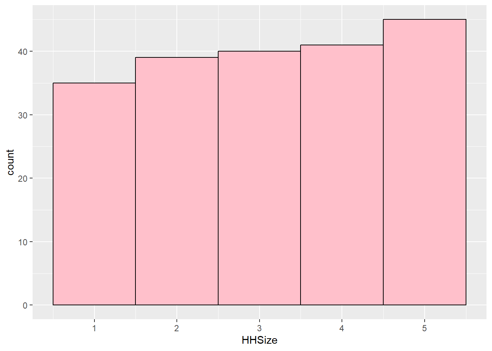

####################################
# Project name: Descriptive Statistics
# Data used: customers.csv
# Libraries used: tidyverse, semTools
####################################3 Descriptive Statistics
- The goal of this lesson is to teach you how to summarize descriptive statistics for both quantitative and qualitative data in R. In order to succeed in this lesson, we need to learn how to describe data by understanding the difference between quantitative and qualitative data alongside examining its context. The context of the data gives us important information about how the data was collected, and its intended use.
3.0.1 Lesson Objectives
- Choose and conduct descriptive analyses for categorical (factor) variables.
- Choose and conduct descriptive analyses for continuous (numeric) variables.
3.0.2 Consider While Reading
- In any analysis, it is critically important to understand your data set by evaluating descriptive statistics. For qualitative data, you should know how to calculate frequencies and proportions and make a user-friendly display of results. For quantitative data, you should know what a histogram is and how it is used to describe quantitative data. We also should know how to describe variables by their center and spread of the distribution.
3.1 Summarizing Qualitative Data
- Qualitative data is information that cannot be easily counted, measured, or easily expressed using numbers.
- Nominal variables: a type of categorical variable that represents discrete categories or groups with no inherent order or ranking
- gender (male, female)
- marital status (single, married, divorced)
- eye color (blue, brown, green)
- Ordinal variables: categories possess a natural order or ranking
- a Likert scale measuring agreement with a statement (e.g., strongly disagree, disagree, neutral, agree, strongly agree)
- Nominal variables: a type of categorical variable that represents discrete categories or groups with no inherent order or ranking
- A frequency distribution shows the number of observations in each category for a factor or categorical variable.
- Guidelines when constructing frequency distribution:
- Classes or categories are mutually exclusive (they are all unique).
- Classes or categories are exhaustive (a full list of categories).
- To calculate frequencies, first, start with a variable that has categorical data.
# Create a vector with some data that could be categorical
Sample_Vector <- c("A", "B", "A", "C", "A", "B", "A", "C", "A", "B")
# Create a data frame with the vector
data <- data.frame(Sample_Vector)- To count the number of each category value, we can use the table() command.
- The output shows a top row of categories and a bottom row that contains the number of observations in the category.
# Create a table of frequencies
frequencies <- table(data$Sample_Vector)
frequencies
A B C
5 3 2 - Relative frequency is how often something happens divided by all outcomes.
- The relative frequency is calculated by \(f_i/n\), where \(f_i\) is the frequency of class \(i\) and \(n\) is the total frequency.
- We can use the prop.table() command to calculate relative frequency by dividing each category’s frequency by the sample size.
# Calculate proportions
proportions <- prop.table(frequencies)- The cumulative relative frequency is given by \(cf_i/n\), where \(cf_i\) is the cumulative frequency of class \(i\).
- The cumsum() function calculates the cumulative distribution of the data
# Calculate cumulative frequencies
cumulfreq <- cumsum(frequencies)
# Calculate cumulative proportions
cumulproportions <- cumsum(prop.table(frequencies))- The rbind() function is used to combine multiple data frames or matrices by row. The name “rbind” stands for “row bind”. Since the data produced by the table is in rows, we can use rbind to link them together.
# combine into table
frequency_table <- rbind(frequencies, proportions, cumulfreq, cumulproportions)
# Print the table
frequency_table A B C
frequencies 5.0 3.0 2.0
proportions 0.5 0.3 0.2
cumulfreq 5.0 8.0 10.0
cumulproportions 0.5 0.8 1.0- We can transpose a table using the t() command, which flips the dataset.
TransposedData <- t(frequency_table)
TransposedData frequencies proportions cumulfreq cumulproportions
A 5 0.5 5 0.5
B 3 0.3 8 0.8
C 2 0.2 10 1.0- Finally, sometimes we need to transform our calculations into a dataset.
- The as.data.frame function is used to coerce or convert an object into a data frame.
- as.data.frame() is used when you have an existing object that needs to be coerced into a data frame. data.frame(), on the other hand, is for creating a data frame from scratch by specifying the data directly. Therefore, both as.data.frame() and data.frame() are used to convert or create data frames in R.
- as.data.frame() coerces an existing object (such as a list, matrix, or vector) into a data frame. Data.frame is used to create a new data frame from individual vectors or lists.
- as.data.frame() accepts a wider variety of inputs (like lists, matrices, and vectors), while data.frame() directly accepts vectors and lists to construct the data frame.
TransposedData <- as.data.frame(TransposedData)
TransposedData frequencies proportions cumulfreq cumulproportions
A 5 0.5 5 0.5
B 3 0.3 8 0.8
C 2 0.2 10 1.03.2 Summarizing Quantitative Data
3.2.1 Defining and Calculating Central Tendency
- The term central location refers to how numerical data tend to cluster around some middle or central value.
- Measures of central location attempt to find a typical or central value that describes a variable.
- Why frequency distributions do not work for numeric variables:
- Numeric variables measured on a continuum.
- Instead, we calculate descriptive statistics including central tendency and spread of the values for a numeric variable.
- We will examine the three mostly widely used measures of central location: mean, median and mode.
- Then we discuss a percentile: a measure of relative position.
3.2.1.1 Using the Mean
The arithmetic mean or simply the mean is a primary measure of central location. It is often referred to as the average. Simply add up all the observations and divide by the number of observations.
The numerator (top of the fraction) is the sum (sigma) of all the values of x from the first value (i = 1) to the last value (n) divided by the number of values (n).
\(m_x = (\sum_{i=1}^{n} x_{i})/n\)
Consider the salaries of employees at a company: 
We can use the mean() command to calculate the mean in R.
# Create Vector of Salaries
salaries <- c(40000, 40000, 65000, 90000, 145000, 150000, 550000)
# Calculate the mean using the mean() command
mean(salaries)[1] 154285.7- Note that due to at least one outlier this mean does not reflect the typical salary - more on that later.
- If we edit our vector to include NAs, we have to account for this. This is a common way to handle NAs in functions that do not allow for them.
salaries2 <- c(40000, 40000, 65000, 90000, 145000, 150000, 550000, NA,
NA)
# Calculate the mean using the mean() command Notice that it does not
# work
mean(salaries2)[1] NA# Add in na.rm parameter to get it to produce the mean with no NAs.
mean(salaries2, na.rm = TRUE)[1] 154285.7- Note that there are other types of means like the weighted mean or the geometric mean.
- The weighted mean uses weights to determine the importance of each data point of a variable. It is calculated by \(\bar{x}_w = \frac{\sum_{i=1}^{n} w_i x_i}{\sum_{i=1}^{n} w_i}\), where are the weights associated to the values.
- An example is below.
values <- c(4, 7, 10, 5, 6)
weights <- c(1, 2, 3, 4, 5)
weighted_mean <- weighted.mean(values, weights)
weighted_mean[1] 6.5333333.2.1.2 Using the Median
- The median is another measure of central location that is not affected by outliers.
- When the data are arranged in ascending order, the median is:
- The middle value if the number of observations is odd, or
- The average of the two middle values if the number of observations is even.
- Consider the sorted salaries of employees presented earlier which contains an odd number of observations.
- On the same salaries vector created above, use median() command to calculate the median in R.
# Calculate the median using the median() command
median(salaries)[1] 90000- Now compare to the mean and note the large difference in numbers signifying that at least one outlier is most likely present.
- Specifically, if the mean and median are different, it is likely the variable is skewed and contains outliers.
mean(salaries)[1] 154285.7- For another example, consider the sorted data below that contains an even number of values.
GrowthFund <- c(-38.32, 1.71, 3.17, 5.99, 12.56, 13.47, 16.89, 16.96, 32.16,
36.29)- When data contains an even number of values, the median is the average of the 2 sorted middle numbers (12.56 and 13.47).
median(GrowthFund)[1] 13.015(12.56 + 13.47)/2[1] 13.015# The mean is still the average
mean(GrowthFund)[1] 10.0883.2.1.3 Using the Mode
- The mode is another measure of central location.
- The mode is the most frequently occurring value in a data set.
- The mode is useful in summarizing categorical data but can also be used to summarize quantitative data.
- A data set can have no mode, one mode (unimodal), two modes (bimodal) or many modes (multimodal).
- The mode is less useful when there are more than three modes.
3.2.1.4 Example of Function with Salary Variable
While this is a small vector, when working with a large dataset and a function like sort(x = table(salaries), decreasing = TRUE), appending [1:5] is a way to focus on the top results after the frequencies have been computed and sorted. Specifically, table(salaries) calculates the frequency of each unique salary, sort(…, decreasing = TRUE) orders these frequencies from highest to lowest, and [1:5] selects the first five entries in the sorted list. This is useful when the dataset contains many unique values, as it allows you to quickly identify and extract the top 5 most frequent salaries, providing a concise summary without being overwhelmed by the full distribution.
Consider the salary of employees presented earlier. 40,000 appears 2 times and is the mode because that occurs most often.
# Try this command with and without it.
sort(x = table(salaries), decreasing = TRUE)[1:5]salaries
40000 65000 90000 145000 150000
2 1 1 1 1 3.2.1.5 Finding No Mode
- Look at the sort(table()) commands with the GrowthFund Vector we made earlier.
- I added a 1:5 in square brackets at the end of the statement to produce the 3 highest frequencies found in the vector.
sort(table(GrowthFund), decreasing = TRUE)[1:5]GrowthFund
-38.32 1.71 3.17 5.99 12.56
1 1 1 1 1 - Even if you use this command, you still need to evaluate the data more systematically to verify the mode. If the highest frequency of the sorted table is 1, then there is no mode.
3.3 Defining and Calculating Spread
- Spread is a measure of distance values are from the central value.
- Each measure of central tendency has one or more corresponding measures of spread.
- Mean: use variance or standard deviation to measure spread.
- skewness and kurtosis help measure spread as well.
- Median: use range or interquartile range (IQR) to measure spread.
- Mode: use the index of qualitative variation to measure spread.
- Not formally testing here with a function.
3.3.1 Spread to Report with the Mean
3.3.1.1 Evaluating Skewness
- Skewness is a measure of the extent to which a distribution is skewed.
- Can evaluate skewness visually with histogram.
- A histogram is a visual representation of a frequency or a relative frequency distribution.
- Bar height represents the respective class frequency (or relative frequency).
- Bar width represents the class width.

3.3.1.2 Skewed Distributions: Median Not Same as Mean
- Sometimes, a histogram is difficult to tell if skewness is present or if the data is relatively normal or symmetric.
- If Mean is less than Median and Mode, then the variable is Left-Skewed.
- If the Mean is greater than the Median and Mode, then the variable is Right-Skewed.
- If the Mean is about equal to the Median and Mode, then the variable has a symmetric distribution.
- In R, we can easily look at mean and median with the summary() command.

- Mean is great when data are normally distributed (data is not skewed).
- Mean is not a good representation of skewed data where outliers are present.
- Adding together a set of values that includes a few very large or very small values like those on the far left of a left-skewed distribution or the far right of the right-skewed distribution will result in a large or small total value in the numerator of Equation and therefore the mean will be a large or small value relative to the actual middle of the data.
3.3.1.3 Using skew() Command in R
- The skew() command is from the semTools package. The install.packages() command is commented out below, but install it one time on your R before commenting it out.
# install the semTools package if necessary.
# install.packages('semTools') Activate the library
library(semTools)- After the package is installed and loaded, run the skew() command on the salaries vector made above.
skew(salaries)skew (g1) se z p
2.311 0.926 2.496 0.013 3.3.1.4 Interpreting the skew() Command Results
se = standard error
z = skew/se
If the sample size is small (n < 50), z values outside the –2 to 2 range are a problem.
If the sample size is between 50 and 300, z values outside the –3.29 to 3.29 range are a problem.
For large samples (n > 300), using a visual is recommended over the statistics, but generally z values outside the range of –7 to 7 can be considered problematic.
Salary: Our sample size was small, <50, so the z value of 2.496 in regards to the salary vector indicates there is a problem with skewness.
GrowthFund: We can check the skew of GrowthFund.
skew(GrowthFund)skew (g1) se z p
-1.381 0.775 -1.783 0.075 - GrowthFund was also considered a small sample size, so the same -2/2 thresholds are used. Here, our z value is -1.78250137, which is in normal range. This indicates there is no problem with skewness.
3.3.2 Histograms
- A histogram is a graphical representation of the distribution of numerical data.
- It consists of a series of contiguous rectangles, or bars, where the area of each bar corresponds to the frequency of observations within a particular range or bin of values.
- The x-axis typically represents the range of values being measured, while the y-axis represents the frequency or count of observations falling within each range.
- Histograms are commonly used in statistics and data analysis to visualize the distribution of a dataset and identify patterns or trends.
- They are particularly useful for understanding the central tendency, variability, and shape of the data distribution - this includes our observation of skewness.
- Works much better with larger datsets.
3.3.2.1 Commands to Make a Histogram
hist() command in base R.
geom_histogram() command in ggplot2 package.
a hist using the GrowthFund dataset does not look that great because its sample size is so small.
hist(GrowthFund)
3.3.2.2 hist vs geom_histogram
- In R, hist() and geom_histogram() are both used to create histograms, but they belong to different packages and have slightly different functionalities.
# Making an appropriate data.frame to use the hist() command
HousePrice <- c(430, 520, 460, 475, 670, 521, 670, 417, 533, 525, 538,
370, 530, 525, 430, 330, 575, 555, 521, 350, 399, 560, 440, 425, 669,
660, 702, 540, 460, 588, 445, 412, 735, 537, 630, 430)
HousePrice <- data.frame(HousePrice)- hist(): This function is from the base R graphics package and is used to create histograms. It provides a simple way to visualize the distribution of a single variable.
# Using base R to create the histogram.
hist(HousePrice$HousePrice, breaks = 5, main = "A Histogram", xlab = "House Prices (in $1,000s)",
col = "yellow")
library(tidyverse)- geom_histogram(): This function is from the ggplot2 package, which is part of the tidyverse. It is used to create histograms as part of a more flexible and powerful plotting system.
# Using geom_histogram() command to create the histogram.
ggplot(HousePrice, aes(x = HousePrice)) + geom_histogram(binwidth = 100,
boundary = 300, color = "black", fill = "yellow") + labs(title = "A Histogram",
x = "House Prices (in $1,000s)", y = "Frequency")
We could add more parameters here to make the 2 histograms look identical, but this configuration of parameters is very close. Take note that there are a lot more parameters you can add to the geom_histogram() command than you can with base R to make it look more professional. Be sure to look them up and also check with the notes in the book, which focuses on geom_histogram instead of hist().
Variance is a measure of spread for numeric variables that is essentially the average of the squared differences between each observation value on some variable and the mean for that variable with population variance. \[Population Var(X) = \sigma^2 = \sum{(x_i-\mu)^2}/N\] \[Sample Var(x) = s^2 = \sum{(x_i-\bar{x})^2}/(n-1)\]
Standard deviation is the square root of the variance.
- Use var() command and sd() command to calculate sample variance and sample standard deviation.
## Calculated from Small Sample x <- c(1, 2, 3, 4, 5) sum((x - mean(x))^2/(5 - 1))[1] 2.5var(x)[1] 2.5sqrt(var(x))[1] 1.581139sd(x)[1] 1.581139sd(HousePrice$HousePrice) #102.6059[1] 102.6059var(HousePrice$HousePrice) #10527.97[1] 10527.97skew(HousePrice$HousePrice) #normalskew (g1) se z p 0.317 0.408 0.777 0.437- Use var() command and sd() command to calculate sample variance and sample standard deviation.
Looking at Spread for a Larger Dataset
customers <- read.csv("data/customers.csv")
summary(customers$Spending, na.rm = TRUE) #mean and median Min. 1st Qu. Median Mean 3rd Qu. Max.
50.0 383.8 662.0 659.6 962.2 1250.0 mean(customers$Spending, na.rm = TRUE) #mean by itself[1] 659.555median(customers$Spending, na.rm = TRUE) #median by itself[1] 662### Spread to Report with the Mean
sd(customers$Spending, na.rm = TRUE)[1] 350.2876var(customers$Spending, na.rm = TRUE)[1] 122701.43.3.2.3 Kurtosis in Evaluating Mean Spread
Kurtosis is the sharpness of the peak of a frequency-distribution curve or more formally a measure of how many observations are in the tails of a distribution.
The formula for kurtosis is as follows: Kurtosis = \(\frac{n(n+1)}{(n-1)(n-2)(n-3)} \sum \left( \frac{(X_i - \bar{X})^4}{s^4} \right) - \frac{3(n-1)^2}{(n-2)(n-3)}\)
Where:
- \(n\) is the sample size
- \(X_i\) is each individual value
- \(\bar{X}\) is the mean of the data
- \(s\) is the standard deviation
- A normal distribution will have a kurtosis value of three, where distributions with kurtosis around 3 are described as mesokurtic, significantly higher than 3 indicate leptokurtic, and significantly under 3 indicate platykurtic.
- The kurtosis() command from the semTools package subtracts 3 from the kurtosis, so we can evaluate values by comparing them to 0. Positive values will be indicative to a leptokurtic distribution and negative will indicate a platykurtic distribution. To see if kurtosis (leptokurtic or platykurtic) is significant, we confirm them by first evaluating the z-score to see if the variable is normal or not. The same cutoff values from skew also apply for the z for small, medium, and large sample sizes in kurtosis. These are the same basic rules for the rules in judging skewness.

- The rules of determining problematic distributions with regards to kurtosis are below.
- If the sample size is small (n < 50), z values outside the –2 to 2 range are a problem.
- If the sample size is between 50 and 300, z values outside the –3.29 to 3.29 range are a problem.
- For large samples (n > 300), using a visual is recommended over the statistics, but generally z values outside the range of –7 to 7 can be considered problematic.
- If kurtosis is found, then evaluate the excess kur score to see if it is positive or negative to determine whether it is leptokurtic or platykurtic.
# z-value is 3.0398, which is > 2 indicating leptokurtic Small sample
# size: range is -2 to 2
kurtosis(salaries)Excess Kur (g2) se z p
5.629 1.852 3.040 0.002 # z-value is 2.20528007, which is > 2 indicating leptokurtic Small
# sample size: range is -2 to 2
kurtosis(GrowthFund)Excess Kur (g2) se z p
3.416 1.549 2.205 0.027 # Small sample size: range is -2 to 2 Skewness and kurtosis are both
# in range.
skew(HousePrice$HousePrice) #normalskew (g1) se z p
0.317 0.408 0.777 0.437 kurtosis(HousePrice$HousePrice) #normalExcess Kur (g2) se z p
-0.540 0.816 -0.661 0.508 - Let’s do a few more examples using the customers dataset.
# Noted sample size at 200 observations or a medium sample size.
# Using threshold –3.29 to 3.29 to assess normality.
#-3.4245446445 is below -3.29 so kurtosis is present
# Negative kurtosis value indicates platykurtic
kurtosis(customers$Spending)Excess Kur (g2) se z p
-1.186 0.346 -3.425 0.001 geom_histogram(binwidth = 100, fill = "pink", color = "black")geom_bar: na.rm = FALSE, orientation = NA
stat_bin: binwidth = 100, bins = NULL, na.rm = FALSE, orientation = NA, pad = FALSE
position_stack semTools::skew(customers$Spending) ##normal indicating no skewnessskew (g1) se z p
-0.018 0.173 -0.106 0.916 # Normal: 2.977622119 is in between -3.29 and 3.29
kurtosis(customers$Income)Excess Kur (g2) se z p
1.031 0.346 2.978 0.003 ggplot(customers, aes(Income)) + geom_histogram(binwidth = 10000, fill = "pink",
color = "black")
semTools::skew(customers$Income) #Skewed rightskew (g1) se z p
0.874 0.173 5.047 0.000 #-3.7251961028 is below -3.29 so kurtosis is present
# Negative kurtosis value indicates platykurtic
kurtosis(customers$HHSize)Excess Kur (g2) se z p
-1.290 0.346 -3.725 0.000 ggplot(customers, aes(HHSize)) + geom_histogram(binwidth = 1, fill = "pink",
color = "black")
semTools::skew(customers$HHSize) #normalskew (g1) se z p
-0.089 0.173 -0.513 0.608 # Normal: -0.20056607 is in between -3.29 and 3.29
kurtosis(customers$Orders)Excess Kur (g2) se z p
-0.069 0.346 -0.201 0.841 geom_histogram(binwidth = 5, fill = "pink", color = "black")geom_bar: na.rm = FALSE, orientation = NA
stat_bin: binwidth = 5, bins = NULL, na.rm = FALSE, orientation = NA, pad = FALSE
position_stack semTools::skew(customers$Orders) ##skewed rightskew (g1) se z p
0.789 0.173 4.553 0.000 3.3.3 Spread to Report with the Median
Range = Maximum Value – Minimum Value.
- Simplest measure.
- Focuses on Extreme values.
- Use commands diff(range()) or max() – min().
IQR: Difference between the first and third quartiles.
- Use IQR() command or quantile() command.
summary(customers$Spending, na.rm = TRUE)Min. 1st Qu. Median Mean 3rd Qu. Max. 50.0 383.8 662.0 659.6 962.2 1250.0diff(range(customers$Spending, na.rm = TRUE))[1] 1200max(customers$Spending, na.rm = TRUE) - min(customers$Spending, na.rm = TRUE)[1] 1200IQR(customers$Spending, na.rm = TRUE)[1] 578.5
3.3.4 Spread to Report with the Mode
- While there is no great function to test for spread, you can look at the data and see if it is concentrated around 1 or 2 frequencies. If it is, then the spread is distorted towards those high frequency values.
3.4 Transformations of Variables
If data is not normally distributed, we need to conduct a transformation. When we transform a variable, we hope to change the shape to normal so that we can continue to calculate under the rules of the normal distribution. For variables that are right skewed, a few transformations that could work to make the variable more normally distributed are: square root, cube root, reciprocal, and log.
First, read in the opioid data set from so we can see a variable that is considered not normal.
# Distance to substance abuse facility with medication-assisted
# treatment
dist.mat <- read.csv("data/opioidFacility.csv")
# Review the data
summary(dist.mat) STATEFP COUNTYFP YEAR INDICATOR
Min. : 1.00 Min. : 1.0 Min. :2017 Length:3214
1st Qu.:19.00 1st Qu.: 35.0 1st Qu.:2017 Class :character
Median :30.00 Median : 79.0 Median :2017 Mode :character
Mean :31.25 Mean :101.9 Mean :2017
3rd Qu.:46.00 3rd Qu.:133.0 3rd Qu.:2017
Max. :72.00 Max. :840.0 Max. :2017
VALUE STATE STATEABBREVIATION COUNTY
Min. : 0.00 Length:3214 Length:3214 Length:3214
1st Qu.: 9.25 Class :character Class :character Class :character
Median : 18.17 Mode :character Mode :character Mode :character
Mean : 24.04
3rd Qu.: 31.00
Max. :414.86 # Graph the distance variable which is called Value but represents
# miles. Note that this graph does not look normal - instead, it
# looks right or positive skewed.
dist.mat %>%
ggplot(aes(VALUE)) + geom_histogram(fill = "#7463AC", color = "white") +
theme_minimal() + labs(x = "Miles to nearest substance abuse facility",
y = "Number of counties")
Next, transform the variable to the 4 recommended transformations to see which one works best. We cannot see that result yet until we graph these results.
- This requires 4 separate calculations using mutate() commands.
dist.mat.cleaned <- dist.mat %>% mutate(miles.cube.root = VALUE^(1/3)) %>% mutate(miles.log = log(x = VALUE)) %>% mutate(miles.inverse = 1/VALUE) %>% mutate(miles.sqrt = sqrt(x = VALUE))Now, graph the variable with the 4 recommended transformations to see which is most normal (bell shaped).
cuberoot <- dist.mat.cleaned %>%
ggplot(aes(x = miles.cube.root)) + geom_histogram(fill = "#7463AC",
color = "white") + theme_minimal() + labs(x = "Cube root of miles to nearest facility",
y = "Number of counties")
logged <- dist.mat.cleaned %>%
ggplot(aes(x = miles.log)) + geom_histogram(fill = "#7463AC", color = "white") +
theme_minimal() + labs(x = "Log of miles to nearest facility", y = "")
inversed <- dist.mat.cleaned %>%
ggplot(aes(x = miles.inverse)) + geom_histogram(fill = "#7463AC", color = "white") +
theme_minimal() + xlim(0, 1) + labs(x = "Inverse of miles to nearest facility",
y = "Number of counties")
squareroot <- dist.mat.cleaned %>%
ggplot(aes(x = miles.sqrt)) + geom_histogram(fill = "#7463AC", color = "white") +
theme_minimal() + labs(x = "Square root of miles to nearest facility",
y = "")- We can show all 4 graphs at one time to directly compare. Ensure your plot window is large enough to see this.
gridExtra::grid.arrange(cuberoot, logged, inversed, squareroot)
Finally, determine if any of the transformations help. In this example, we determined that the cuberoot had the most normal transformation. The cube root graph contains a nice bell shape curve.
Let’s use that new variable in the analysis. Start by summarizing the descriptive statistics, including retrieving the mean and standard deviation for cube root of miles, which are values that are required in the probability calculations.
dist.mat.cleaned %>%
drop_na(miles.cube.root) %>%
summarize(mean.tran.dist = mean(x = miles.cube.root), sd.tran.dist = sd(x = miles.cube.root)) mean.tran.dist sd.tran.dist
1 2.662915 0.7923114- 2.66 and .79 are the values we pulled for mean and standard deviation. We can use that information to calculate probabilities based on the functions we mentioned above.
- So, what happens if the cuberoot of X < 3 or less than 27 miles from the facility?
- We estimate that about 66% of counties fall in the shaded area, having to travel less than 27 miles to nearest facility (27 = 3^3).
- This means that (1- 0.6665403)*100 is the percentage of countries having to travel more than 27 miles to the nearest facility.
27^(1/3)[1] 33^3[1] 27# P(X< cuberoot(27) = P(X < 3)
pnorm(3, 2.66, 0.79) ##about 66% likely[1] 0.6665403# P(X > 3) #about 33% likely
pnorm(3, 2.66, 0.79, lower.tail = FALSE)[1] 0.33345971 - pnorm(3, 2.66, 0.79)[1] 0.3334597- We estimate that about 20% of counties fall in the shaded area, having to travel < 8 miles to nearest facility (8 = 2^3).
pnorm(2, 2.66, 0.79)[1] 0.2017342- We can use the equation to calculate the z-score for a county where you have to drive 15 miles to a facility.
## z = (x-m)/sd since we are in cube root - we multiply x by ^1/3
(15^(1/3) - 2.66)/0.79[1] -0.2453012The transformed distance of a facility 15 miles away is .24 standard deviations LOWER than the mean transformed distance.
Next, we can calculate z for a county with residents who have to travel 50 miles to the nearest facility. In the transformed miles variable, this would be the cube root of 50, or a value of 3.68.
(50^(1/3) - 2.66)/0.79 #[1] 1.296242[1] 1.296242- This indicated that the transformed distance to a facility with MAT for this example county was 1.29 standard deviations above the mean transformed distance from a county to a facility with MAT.
3.4.1 Transformation Second Example
- Taking a second example, let us look at the PHYSHLTH variable from the gender dataset (brfss.csv). We worked with this dataset in an earlier lesson. In doing so, we cleaned the data.
- I copied over that data preparation code in regards to the variable of interest (PHYSHLTH), and tidied it up for one example. To remind ourselves, the question being asked was the following, “Now thinking about your physical health, which includes physical illness and injury, for how many days during the past 30 days was your physical health not good?”
- If ever you are using the MASS package and dplyr, the select function may have a conflict where R does not know which to use. If you get an error when using select, add dplyr:: in front of the statement to ensure you are using select from dplyr to select variables.
#
gender <- read.csv("data/brfss.csv")
# Review the data
summary(gender) TRNSGNDR X_AGEG5YR X_RACE X_INCOMG
Min. :1.000 Min. : 1.000 Min. :1.000 Min. :1.000
1st Qu.:4.000 1st Qu.: 5.000 1st Qu.:1.000 1st Qu.:3.000
Median :4.000 Median : 8.000 Median :1.000 Median :5.000
Mean :4.059 Mean : 7.822 Mean :1.992 Mean :4.481
3rd Qu.:4.000 3rd Qu.:10.000 3rd Qu.:1.000 3rd Qu.:5.000
Max. :9.000 Max. :14.000 Max. :9.000 Max. :9.000
NA's :310602 NA's :94
X_EDUCAG HLTHPLN1 HADMAM X_AGE80
Min. :1.000 Min. :1.000 Min. :1.000 Min. :18.00
1st Qu.:2.000 1st Qu.:1.000 1st Qu.:1.000 1st Qu.:44.00
Median :3.000 Median :1.000 Median :1.000 Median :58.00
Mean :2.966 Mean :1.108 Mean :1.215 Mean :55.49
3rd Qu.:4.000 3rd Qu.:1.000 3rd Qu.:1.000 3rd Qu.:69.00
Max. :9.000 Max. :9.000 Max. :9.000 Max. :80.00
NA's :208322
PHYSHLTH
Min. : 1.0
1st Qu.:20.0
Median :88.0
Mean :61.2
3rd Qu.:88.0
Max. :99.0
NA's :4 # PHYSHLTH example
gender.clean <- gender %>%
dplyr::select(PHYSHLTH) %>%
drop_na() %>%
# Turn the 77 values to NA, since 77 meant don't know or not sure
# from the brss codebook
mutate(PHYSHLTH = na_if(PHYSHLTH, y = 77)) %>%
# Turn the 99 values to NA, since 99 meant Refuled from the brss
# codebook.
mutate(PHYSHLTH = na_if(PHYSHLTH, y = 99)) %>%
# Recode the 88 values to 0 - since the number 88 meant 0 days of
# illness from the brss codebook.
mutate(PHYSHLTH = recode(PHYSHLTH, `88` = 0L))
table(gender.clean$PHYSHLTH)
0 1 2 3 4 5 6 7 8 9 10
291696 19505 24890 14713 7644 12931 2140 8049 1478 325 9437
11 12 13 14 15 16 17 18 19 20 21
133 908 92 4558 8638 221 153 279 51 5554 1111
22 23 24 25 26 27 28 29 30
132 80 98 2270 149 204 831 390 35701 summary(gender.clean) PHYSHLTH
Min. : 0.000
1st Qu.: 0.000
Median : 0.000
Mean : 4.224
3rd Qu.: 3.000
Max. :30.000
NA's :10299 qnorm(0.95, mean = 500, sd = 10)[1] 516.4485- Once here, we graph PHYSHLTH.
gender.clean %>%
ggplot(aes(PHYSHLTH)) + geom_histogram(fill = "#7463AC", color = "white") +
theme_minimal() + labs(x = "Number of Days Sick", y = "Frequency")
We determined from the descriptive statistics lesson that this variable had severe skewness (positive). Most people had 0 days of illness.
Next, we run the 4 calculations by mutating the variable and saving all 4 transformation under new variable names.
genderTransform <- gender.clean %>%
mutate(phy.cube.root = PHYSHLTH^(1/3)) %>%
mutate(phy.log = log(x = PHYSHLTH)) %>%
mutate(phy.inverse = 1/PHYSHLTH) %>%
mutate(phy.sqrt = sqrt(x = PHYSHLTH))- Next, we create the 4 graphs for each of the 4 transformations labelled above to see if one helps.
cuberoot <- genderTransform %>%
ggplot(aes(x = phy.cube.root)) + geom_histogram(fill = "#7463AC", color = "white",
binwidth = 0.5) + theme_minimal() + labs(x = "Cube root", y = "")
logged <- genderTransform %>%
ggplot(aes(x = phy.log)) + geom_histogram(fill = "#7463AC", color = "white",
binwidth = 0.5) + theme_minimal() + labs(x = "Log", y = "")
inversed <- genderTransform %>%
ggplot(aes(x = phy.inverse)) + xlim(0, 1) + geom_histogram(fill = "#7463AC",
color = "white", binwidth = 0.05) + theme_minimal() + labs(x = "Inverse",
y = "")
squareroot <- genderTransform %>%
ggplot(aes(x = phy.sqrt)) + geom_histogram(fill = "#7463AC", color = "white",
binwidth = 1) + theme_minimal() + labs(x = "Square root", y = "")- Finally, we plot the graphs using gridExtra so that we can see all 4.
gridExtra::grid.arrange(cuberoot, logged, inversed, squareroot)
- In this example, NOT ONE transformation helped. If this happens, something else would need to occur before correctly using the variable. Examples could be to run a non-linear model, or categorizing the data into bins, especially since there was a large frequency of people that were not ill.
3.5 Using AI
Use the following prompts on a generative AI, like chatGPT, to learn more about descriptive statistics.
What is the difference between mean, median, and mode in describing data distributions, and how can each be used to understand the shape of a distribution? * How do mean and median help identify whether a distribution is skewed, and what does it tell us about the dataset?
Can you explain how the mean, median, and mode behave in normal, positively skewed, and negatively skewed distributions?
What are standard deviation (SD) and variance, and how do they measure the spread of data in a distribution?
Explain the differences between range, interquartile range (IQR), and standard deviation in describing the variability in a dataset.
How does a high standard deviation or variance affect the interpretation of a dataset compared to a low standard deviation?
What is skewness, and how does it affect the shape of a distribution? How can we identify positive and negative skew?
How is kurtosis defined in the semTools package in R, and what does it tell us about the tails of a distribution?
How would you compare and contrast the roles of skewness and kurtosis in identifying the shape and behavior of a distribution?
3.6 Summary
- In this lesson, we worked through descriptive statistics including skewness and kurtosis. We learned about variables and scales of measurement, how to summarize qualitative and quantitative data.